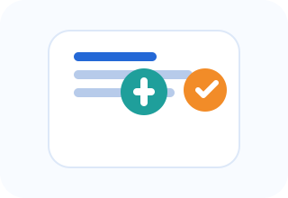

Core capabilities
Issue reporting, priority routing, evidence capture, and status visibility are presented in a simple experience suited to both residents and administrators.

Citizen reporting app
Designed for public issues such as drainage, road safety, and infrastructure concerns, the app helps route problems quickly and keep every step visible.
Issue reporting, priority routing, evidence capture, and status visibility are presented in a simple experience suited to both residents and administrators.
This app extends the Prevleakgroup™ offering into public engagement and service delivery, giving every stakeholder a clear view of the issue lifecycle.
Clear forms, visible progress, and straightforward communication help keep the process reliable across phones, web, and field workflows.
The public reporting solution is live as a browser web app while app store publication is pending. Users can add it to the device home screen for quick field access.
Email verification is required before profile activation.
Strong user profiles require verified email identity and authenticated access.